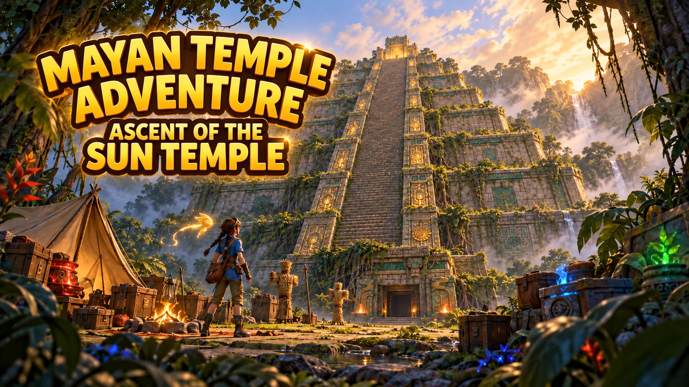
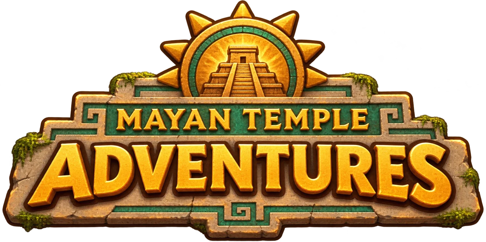
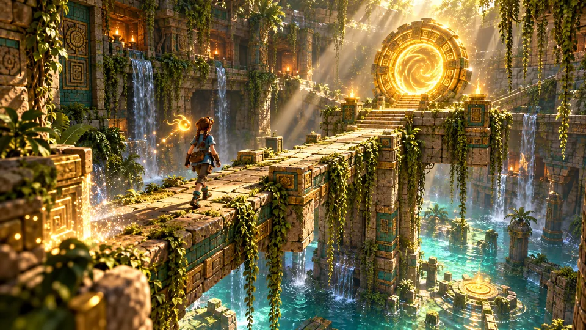
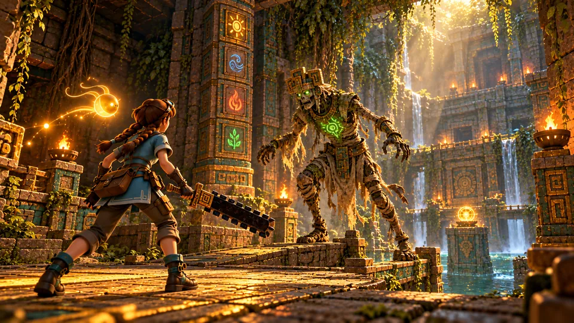
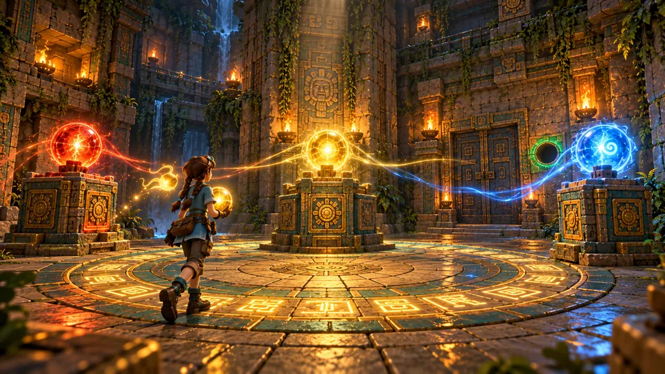
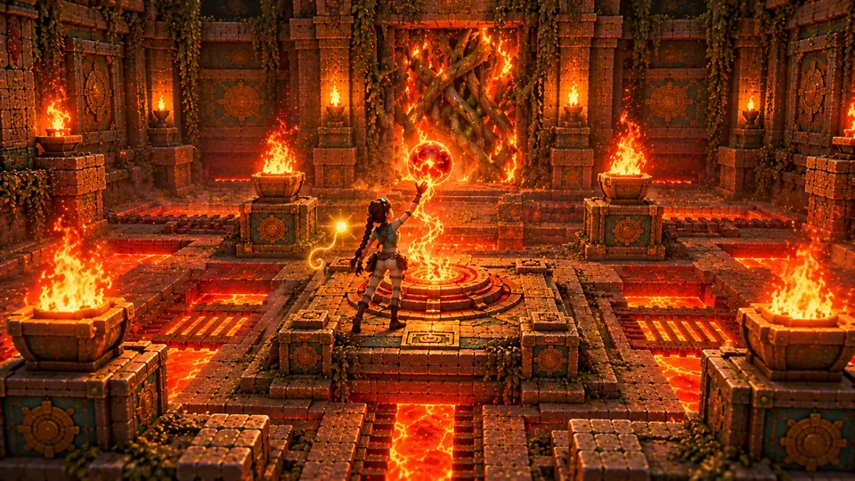
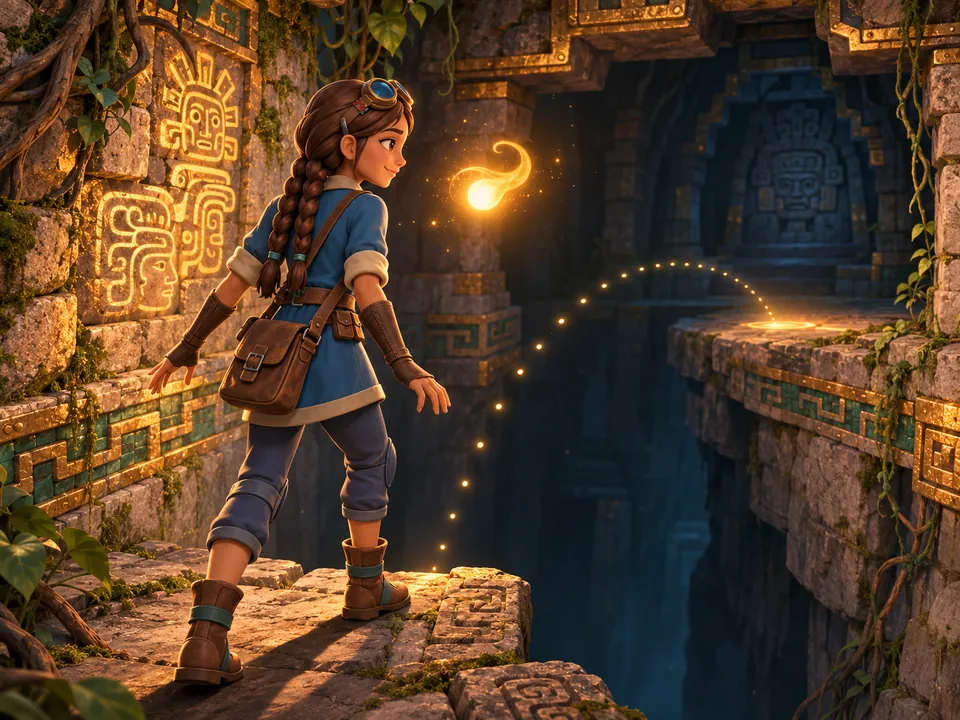
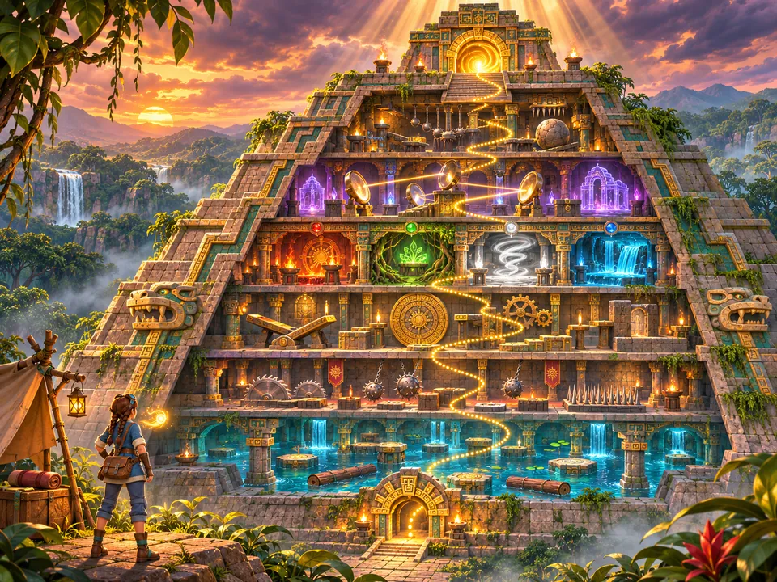

A Mayan pyramid that rearranges itself around you.
Five Fortnite islands in one living temple, built in UEFN. At their heart, a co-op climb for up to four friends.
- Genre
- Co-op action-adventure platformer
- Platform
- Fortnite islands, built in UEFN
- Tone
- Ratchet & Clank, Jak & Daxter
- Structure
- The Shell, six tiers, then the summit
- Players
- 1–4 co-op, as your own Fortnite character
- Islands
- Five, all set in one temple
One temple. Eighteen floors. A spirit who has seen every climber fall.
You and up to three friends enter an ancient Mayan sun temple as Climbers, each in your own Fortnite character. The temple is alive: it rearranges itself and swallows everyone who climbs it.
Kaya, a young explorer, climbs the first floor with you and dies on its traps. She wakes at the Threshold to find herself carved into the temple's wall, and stays to read it. K'in, the temple's last spirit, guides you on. Floor by floor your party fights the risen guardians, survives the traps, solves the orb puzzles and earns the elemental powers the builders once held. Whoever falls is pulled back, and carved into the wall beside Kaya. At the summit you carry the Sun Orb to the great portal and decide the temple's fate together: restore the cycle, or break it.
Read the full overviewFive ideas hold up the whole climb

Ascend
Every run is a climb. The temple beneath you is progress made visible, floor by floor toward the summit.

Fight
Melee and ranged combat against cursed priests and awakened creatures, with an obsidian macuahuitl in hand.

Solve
Orb, plate, mirror and totem puzzles that grow deeper the higher you climb.

Grow for good
The four Elemental Orbs and hub upgrades persist between runs, and your own carving on the Spirit Mural grows with every tier.

Never alone
Climb with up to three friends, while K'in, the last spirit of the temple, teaches, warns and remembers.
One temple, five islands
The islands and the roadmap
One element broke the balance
Long ago the temple's builders harnessed fire, earth, wind and water through sacred orbs and lived in balance, until one element betrayed the rest. The balance shattered, the priests were cursed into undeath, the orbs scattered up through the floors and the temple sealed itself into an endless cycle.
Every climb starts in the Threshold, the vast base hall where K'in waits above the round altar, three portals stand beneath the Spirit Mural, and a trader named Oxlahun keeps an offering table. Anyone who dies inside the temple wakes here again. The mural keeps a record of each of them.
Enter the worldFloor by floor to the sun
Each tier ends in a Portal Chamber, where a fragment of the mural and one line from K'in reveal the next piece of the temple's history.


- SummitThe Sky Altar“The cycle begins again… unless you break it.”
- Tier VIThe Ascension“A single orb chose memory over power.”
- Tier VThe Illusion Depths“The elements turned on one another.”
- Tier IVThe Elemental Sanctums“The orbs scattered, and guardians were born.”
- Tier IIIThe Shifting Vaults“The temple learned to move, so no thief would find the same path twice.”
- Tier IIThe Trap Galleries“The first element betrayed them.”
- Tier IThe Flooded Foundations“The ancients harnessed balance.”
- StartThe ShellWhere every climb begins.
The Likeness
A short story, in progress
Kaya dies on her very first trap and wakes at the Threshold to find her own likeness freshly carved into the Spirit Mural, beside a panel that contradicts everything the temple's spirit guide has told her.
About the story